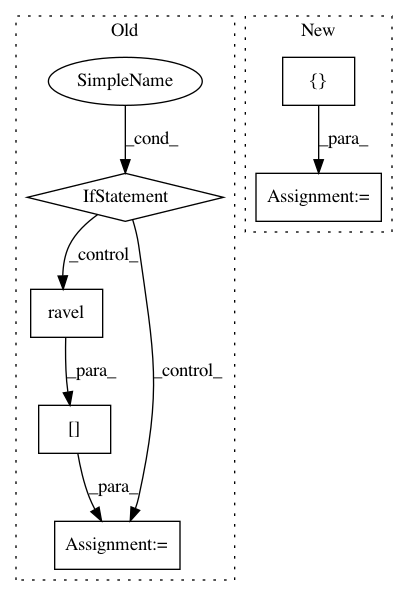

43a60c9f4380448b9013efa4fb021796e7e1ff3c,test/test_mahalanobis_mixin.py,,test_components_is_2D,#Any#Any#,281
Before Change
trunc_data = input_data[..., :1]
// we drop duplicates that might have been formed, i.e. of the form
// aabc or abcc or aabb for quadruplets, and aa for pairs.
if isinstance(estimator, _QuadrupletsClassifierMixin):
for slice_idx in [slice(0, 2), slice(2, 4)]:
pairs = trunc_data[:, slice_idx, :]
diffs = pairs[:, 1, :] - pairs[:, 0, :]
to_keep = np.where(np.abs(diffs.ravel()) > 1e-9)
trunc_data = trunc_data[to_keep]
labels = labels[to_keep]
elif isinstance(estimator, _PairsClassifierMixin):
diffs = trunc_data[:, 1, :] - trunc_data[:, 0, :]
to_keep = np.where(np.abs(diffs.ravel()) > 1e-9)
trunc_data = trunc_data[to_keep]
labels = labels[to_keep]
model.fit(*remove_y_quadruplets(estimator, trunc_data, labels))
assert model.components_.shape == (1, 1) // the components must be 2D
After Change
elif isinstance(estimator, _PairsClassifierMixin):
pairs_idx = [[0, 1]]
else:
pairs_idx = []
for pair_idx in pairs_idx:
pairs = trunc_data[:, pair_idx, :]
diffs = pairs[:, 1, :] - pairs[:, 0, :]
In pattern: SUPERPATTERN
Frequency: 3
Non-data size: 6
Instances
Project Name: metric-learn/metric-learn
Commit Name: 43a60c9f4380448b9013efa4fb021796e7e1ff3c
Time: 2020-06-17
Author: gabriel.rudloff@gmail.com
File Name: test/test_mahalanobis_mixin.py
Class Name:
Method Name: test_components_is_2D
Project Name: biolab/orange3
Commit Name: 7fee1dae63fabcfa6c90cc1deecdd337083c7692
Time: 2015-01-30
Author: anze.staric@gmail.com
File Name: Orange/classification/softmax_regression.py
Class Name:
Method Name:
Project Name: automl/auto-sklearn
Commit Name: de074e29f36c33d5a8627f9e8ab92f1e0fd46d82
Time: 2014-12-15
Author: feurerm@informatik.uni-freiburg.de
File Name: AutoSklearn/implementations/OneHotEncoder.py
Class Name: OneHotEncoder
Method Name: _fit_transform